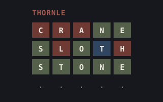
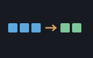
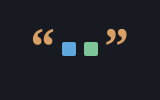
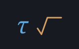
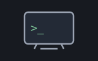

thornle is the five-letter guessing game, played in a
terminal. You have six guesses at a hidden word. After each guess, every
letter comes back with a mark. The mark says the letter is in the right
place, is in the word but in the wrong place, or is not in the word.
The marks are the three thread colours of the project's mark. Drab olive means right place. Indigo navy means wrong place. Madder oxblood means not in the word. A keyboard under the grid shows the best mark seen so far for each letter. A letter you have not tried yet stays lowercase.
There is no window. The screen is any VT100/ANSI terminal, a terminal that understands a standard set of control codes for moving the cursor and setting colours. The program paints it with escape strings, short runs of characters that carry those codes. Each guess is a whole typed line, so the terminal does the editing. Type a word and press Enter.
One file holds the words, one word per line. The game picks the answer from it and checks every guess against it. When input ends, from a closed or redirected stdin (standard input), the program leaves the game and then the menu. A script that runs out of lines cannot hang it.
The name comes from Thornhill, in Dewsbury, in the Heavy Woollen District where the shoddy trade began. The -le on the end is the game's own.
John Michell (1724–1793) was rector of Thornhill from 1767 until his death. In 1767 the Royal Society also published his Inquiry into the probable Parallax, and Magnitude of the fixed Stars. In it he asked the sky a new question: how likely is this, by chance?
He took the Pleiades, the tight knot of stars in Taurus. He worked out the odds that stars scattered at random would fall that close together. The odds came to about half a million to one against. So, he argued, the stars are together, held by their own gravity.
It was one of the first uses of probability to reason from what is seen to what causes it. He predicted that some stars are bound in pairs. William Herschel found those double stars a generation later.
The game asks the same reasoning of you. Every word in the list could be the answer. Each row of marks is evidence, and most words could not have produced it, so they drop out.
A guess that splits the remaining words evenly is the safe choice. Whatever comes back, the list shrinks. A guess at the word you think is the answer is the risk. It can win at once, or leave most of the list standing. Six rows is all the evidence you get.
Michell was ahead of his time in other ways too. In 1783 he reasoned that a star with enough mass would hold back its own light. That was the first account of what is now called a black hole. He also built a torsion balance to weigh the Earth. It passed after his death to Henry Cavendish, and the measurement made with it is still called the Cavendish experiment.
Wordle is a trademark of The New York Times Company.
This mill is an independent educational homage, not affiliated with or
endorsed by the trademark owner. See THIRD-PARTY-NOTICES.md,
which also says where the word list comes from.
The game needs little introduction: six guesses, five letters, and the coloured marks that made it a daily habit for millions. This version keeps the rules. That includes the one that matters most and is most often got wrong: how repeated letters are marked.
Exact hits are marked first, and each one uses up its letter in the answer. Then, from left to right, each remaining guess letter is marked wrong place only if the answer still has an unused copy of it. That copy is then used up too.
Take the answer crane and the guess eerie.
The last E is an exact hit, and it uses up the answer's only E. So the
first two Es are marked not in the word.
Two things are different on purpose. The answer is picked at random rather than tied to the calendar, and a seed can replay a game. And the marks are the project's own three shades, not the original's green, yellow and grey.
In VS Code. Open thornle.shoddy and press
F5. The debugger runs the program from its own folder, so it
finds the default files/words.txt with no settings. The game
opens in a terminal window of its own, and you type your guesses
there.
To debug with another list, or with a seed so the answer is the same on
every run, choose Run → Add Configuration….
When VS Code asks for a debugger, pick Shoddy (perch).
It writes .vscode/launch.json with one entry, Perch:
debug current file.
If the workspace already has a launch.json, VS Code offers
snippets instead. Pick Shoddy: Perch (debug current
file). Then pass the list and the seed in args, in
the order the command line takes them:
{
"type": "shoddy",
"request": "launch",
"name": "Thornle, short list, seeded",
"program": "${workspaceFolder}/mills/thornle/thornle.shoddy",
"args": ["files/short-list.txt", "7"]
}A relative path in args resolves against the folder the
program runs from. That is the program's own folder, unless
cwd says otherwise. The file files/short-list.txt
holds six words, so a seeded game on it is quick to steer to either ending. The
VS Code page lists every launch
setting.
From the mill folder. Use the wrapper,
./build.sh, or ./build.ps1 on Windows. It finds
the mill itself, so it needs no setup first:
./build.sh # run the game on files/words.txt
./build.sh short # run the game on files/short-list.txt, six words
./build.sh test # the headless checks, a weave of the shell, and one scripted gameWith the mill directly. This needs mill
on your PATH. The first argument is the word list. It
defaults to files/words.txt, resolved against the folder you
are in. So from the mill folder:
mill run thornle.shoddyFrom anywhere else, give the path to the list:
mill run path/to/thornle.shoddy path/to/files/words.txtWith no second argument, the answer is different on every run. A number as the second argument seeds the game. The same seed with the same list gives the same answer, so you can report a game and replay it:
mill run thornle.shoddy files/words.txt 42If the list cannot be read, the program prints one line naming the
file and the reason, and stops. For example: CANNOT READ
'no-such-file.txt' (NO SUCH FILE). There is no stack trace.
The terminal. The game needs an ANSI terminal at least 80 columns by 24 rows. Windows Terminal and any modern Unix terminal show the 24-bit colours. The legacy Windows console window does not.
The menu's C turns colour off. With colour off, the
program sends no colour codes at all, only cursor moves and plain text.
The marks become signs around the letter: [A] for right
place, (A) for wrong place, and a bare A for not
in the word.
The menu shows what the game is and a legend of the marks, drawn as the board will draw them. Turn colour off and the legend shows the signs before you play. Below the legend is the session tally: games played, games won, the current streak, and how many guesses the last win took.
Then come the choices: P to play, C for
colour on or off, and Q to quit. The tally is not saved
between runs.
In a game, type a word and press Enter. A line that is
not five letters gets FIVE LETTERS. A word the list does not
hold gets NOT IN THE LIST. Neither one uses up a guess, so
you just type again.
Type Q or QUIT on its own to return to the
menu. Any five-letter word is a guess, so a word that starts with Q never
counts as quitting. When the game ends, the message line says
GOT IT IN 3 or shows the answer. The grid stays on screen,
and Enter returns to the menu.
The same game also exists as twenty-seven words of the reckoner
dictionary, in thornle.halifax in the mill folder. Sparky is
the MCP server that puts that dictionary in front of Claude. MCP, the
Model Context Protocol, is how an assistant like Claude calls tools.
With Sparky registered, you can play thornle in a conversation. You say
a word, Claude calls GUESS, and the board comes back. Claude
types at the prompt for you and shows you what the calculator
printed.
The paths below assume Sparky's root is the repository folder. That is
what hosts/mcp/build.sh install sets up when you run it from
the repository. Every path Sparky reads is relative to its root, and it
refuses anything outside it.
Install Sparky and register it. From the repository root:
bash hosts/mcp/build.sh installOr, without the repository, take the sparky archive for your system
from the releases
page. Unpack it, and register it with its root set to the folder that
holds mills/thornle:
claude mcp add --scope user sparky -- /path/to/sparky --root /path/to/shoddyThe sparky page has the forms other clients take.
Start a new Claude Code session. A server
registered during a session is not picked up until the next one. Check
that claude mcp list shows sparky as
connected.
Load the game. Say:
load mills/thornle/thornle.halifaxClaude calls Sparky's load tool, which answers
loaded 27 words. The file loads as it is, with no copying and
no renaming.
Start a game. Say start a thornle game.
Claude sends this line to eval, and the empty board comes
back:
"mills/thornle/files/words.txt" NEWTHORNLE PRINTFor a quick game on six words with the same answer every time, say start a thornle game with the words rossa, jetty, wizzo, cuppa, cohoe and gurks, seed 7. That is the game shown below.
Guess. Say a word, for example crane.
Claude sends "crane" GUESS PRINT and shows you the board.
Say quit to give up, and new game to go back to step
4.
Each line ends in PRINT, so the board comes back as
printed lines, not as one quoted string on the stack. Putting
7 SEED before the new game replays the same answer, as the mill's second
argument does.
The file has no comments, because the file format has none. A definition is just its tokens, and one bad line refuses the whole file.
Here is that game, as eval answered it, with its
[printed] tags left out. The answer is
wizzo:
> 7 SEED { "rossa" "jetty" "wizzo" "cuppa" "cohoe" "gurks" } NEWTHORNLEWITH PRINT
THORNLE
. . . . .
. . . . .
. . . . .
. . . . .
. . . . .
. . . . .
q w e r t y u i o p
a s d f g h j k l
z x c v b n m
Guess: a five-letter word in quotes, then GUESS. Q or QUIT gives up.
> "cohoe" GUESS PRINT
THORNLE
C (O) H O E
. . . . .
. . . . .
. . . . .
. . . . .
. . . . .
q w E r t y u i (O) p
a s d f g H j k l
z x C v b n m
Guess: a five-letter word in quotes, then GUESS. Q or QUIT gives up.The calculator has no colour, so the marks are the signs the terminal
version uses with colour off. [A] is right place,
(A) is wrong place, and a bare A is not in the
word. In the legend, a lowercase letter has not been tried yet.
The first O is wrong place and the second is not in the word. The
answer wizzo holds one O, the first O claimed it, and none was left
for the second. That is the repeated-letter rule the tests pin.
> "gurks" GUESS PRINT
THORNLE
C (O) H O E
G U R K S
. . . . .
. . . . .
. . . . .
. . . . .
q w E R t y U i (O) p
a S d f G H j K l
z x C v b n m
Guess: a five-letter word in quotes, then GUESS. Q or QUIT gives up.
> "wizzo" GUESS PRINT
THORNLE
C (O) H O E
G U R K S
[W] [I] [Z] [Z] [O]
. . . . .
. . . . .
. . . . .
q [W] E R t y U [I] [O] p
a S d f G H j K l
[Z] x C v b n m
GOT IT IN 3
Game over. NEWTHORNLE starts another.With the win, the legend's O moved from wrong place to right place. A
later, worse mark never overwrites a better one, so it would not have
moved back. Six misses end the game with IT WAS WIZZO on the
note line instead. So does "Q" GUESS at any point.
The words. A word body takes exactly one cell, cannot call itself, and cannot read a line of input. So there is no loop: the game is one word call per turn.
The state lives in registers (WORDS, ANS,
GUESSES, NOTE, OVER), not in one
record. As in the mill, marks are never stored; the board marks every
guess again when it paints. These are the words you call:
| Word | What it does |
|---|---|
NEWTHORNLEWITH | Takes a list of words and keeps the five-letter ones, lowercased and trimmed. It picks the answer and answers the empty board. |
GUESS | Takes one typed line and answers the
board after it. A line that is not five letters sets FIVE
LETTERS. A word the list does not hold sets NOT IN THE
LIST. Typing Q or QUIT gives up and
shows the answer. A blank line changes nothing, and so does any line once the game
has ended. |
NEWTHORNLE | Takes a file path, reads it with
READLINES, and hands the lines to
NEWTHORNLEWITH. Use it where the prompt can read a plain
word list. |
MARKS | The marking, with the repeated-letter
rule above. It reads the answer and the guess from the registers
ANS and GS, and answers a list: 3 for right
place, 2 for wrong place, 1 for not in the word. |
At the halifax prompt the same file loads as it is,
with LOAD "thornle.halifax". You play it the same way, one
line per turn. Whether "files/words.txt" NEWTHORNLE can read
the shipped list there depends on the prompt's file access. The literal
list works at either prompt.
The pure model is thornle-core.shoddy. It
holds the rules and nothing else. That means the word list as the game
uses it (lowercased, trimmed, five letters only), the marking of a guess
against the answer, the state record, the line reader, and the keyboard
legend.
The core prints nothing, reads nothing, and moves no cursor. So it runs
headless, with no screen attached, and is tested that way twice over.
The folder's test.shoddy checks the marking, the guesses it
takes and refuses, the endings, the typed lines, the legend, a seeded new
game, and that the shipped list of 14,855 words loads whole. In the
golden suite, src/Shoddy.Tests/ThornleTests.cs checks the same
core.
The state is one record. It is threaded through the loop and replaced, never changed. It holds the answer, the list, the accepted guesses, a note for the message line, and two flags for won and ended.
Marks are not stored. The shell works them out again from the answer and each guess when it paints. Marking five letters costs less than keeping two lists in step.
The terminal half is thornle.shoddy:
painting, the menu, and the loop. It reads the file with the
TryReadLines builtin, which answers the lines or the reason it
could not read them. It hands the list to the core.
The shell paints one frame per typed line. The Print
builtin adds a newline, so each frame is built as one string that ends with the cursor
on row 19. The newline then lands on row 20, where the prompt goes, and
nothing can scroll the board away.
The colour words live in the shell. They are two short definitions built on the VT100 machine's escape prefix. Each of the four hex values is written once, beside the shade it names. The empty tiles use the terminal's own ink, dimmed, so they show on a dark screen and on light paper alike.
The loop is driven by lines, not by a clock. The game has no clock of its own, so nothing ticks: paint, read a line, apply it, repeat.
The cut runs along the effect line, the line between computing and showing. Everything the game is lives in the core and can be checked with no screen attached. Everything the game shows lives in the shell, and the shell decides nothing.
That split lets the tests hand the core a list of ten words and drive it with plain strings. It is also why the repeated-letter rule, the one piece of logic worth getting exactly right, is pinned by worked examples. Nobody has to play the game and look.
| Machine | Why | |
|---|---|---|
 | seq | In the core:
All checks a word is all letters, Contains is
the dictionary lookup, and Append adds an accepted
guess. |
 | str | In the core:
Trim cleans a typed line and a list entry. In the shell:
StrRep lays out the empty tiles. |
 | math | In the core:
Pick chooses the answer. The shell seeds first when a second
argument is given. Otherwise it leaves the runtime's generator as it
started, already seeded from the clock. |
 | vt100 | In the shell: cursor moves, clearing, bold, dim, and the escape prefix the colour words are built on. The machine stops at attributes, so the 24-bit colour codes live in the shell itself. |
Five builtins do the rest with no Include: TryReadLines
for the list, InputLine for each line, Print for
each frame, Args for the arguments, and Seed for
a replay.